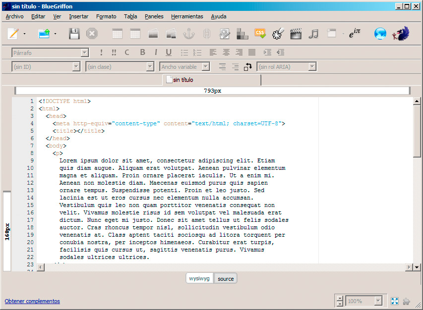
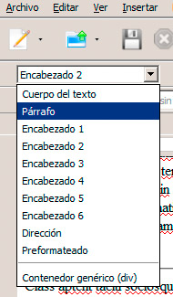
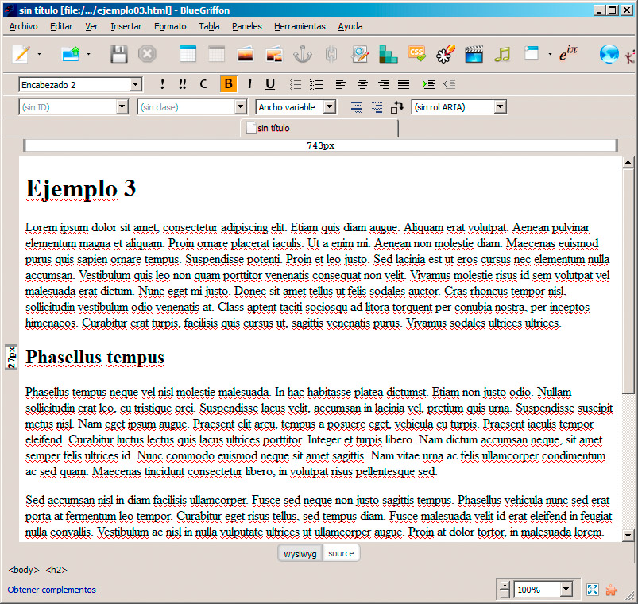

A continuación comenzaremos a revisar las principales etiquetas que se utilizan para aplicar formato a un texto.
Títulos y párrafos
El lenguaje HTML es muy cuidadoso con la organización de la información, por lo que lo primero que debemos conocer es cómo estructurar los títulos y cómo definir los párrafos de texto.
Párrafos
Las etiquetas <p> y </p> se emplean para definir un bloque de texto que se comporta como un párrafo. Normalmente no dejaremos nunca una porción de texto suelta por la página web, sino que la rodearemos con esas etiquetas. El editor de texto se encargará de hacerlo por nosotros pero, si estamos usando otro tipo de editor, debemos asegurarnos de qué sucede.
Actividad 1
Vamos a incorporar algunos bloques de texto a nuestra página web. Accede a esta página (http://es.lipsum.com/feed/html), copia los primeros cuatro bloques de texto y pégalos en una nueva página web creada con BlueGriffon; posteriormente guarda la página y comprueba que el texto se ha dividido en párrafos. Si no es así, lo haremos manualmente pulsando la tecla Intro al final de cada párrafo.

Los párrafos se insertan automáticamente en BlueGriffon cada vez que pulsamos la tecla Intro. No obstante podemos forzar ese comportamiento seleccionando la opción Párrafo dentro de la lista desplegable que aparece en la parte izquierda de la aplicación. Para quitar las marcas de párrafo, deberíamos seleccionar la opción Cuerpo de texto.

Títulos
Las etiquetas <h1> y </h1> se utilizan para definir un texto como título, indicando que es una cabecera (la h viene de header, cabecera en inglés) que queremos destacar sobre el resto del texto. Junto a <h1> contamos con <h2>, <h3> y así hasta <h6> para definir diferentes títulos, de mayor a menor importancia.
Una página web bien diseñada contará con estos encabezados para definir los distintos apartados del texto, con sus diferentes niveles. En la figura se puede observar cómo hemos incorporado algunos encabezados, en este caso h1 y h2, a nuestro texto. Se consigue añadiendo el texto y a continuación seleccionando el encabezado deseado en cuadro de la parte izquierda.

Como se puede observar, cada uno de los niveles de encabezado tiene una apariencia diferente de tamaño y tipo de letra. Este aspecto se puede modificar como veremos un poco más tarde.
Saltos de línea y líneas separadoras
Para complementar las opciones de separación del texto, contamos con dos etiquetas más.
- <br /> inserta un salto de línea en el texto. No genera un nuevo párrafo, sino que parte la línea en dos. Es un elemento puntual, que no lleva etiqueta de cierre.
- <hr /> inserta un salto de línea en el texto, pero mostrando una línea horizontal visible.
Pregunta de Elección Múltiple
|
<p> y </p>.
| |
|
<h1> y </h1>.
| |
|
<br /> y <hr />.
|
Actividad 2
En la página del ejemplo anterior accede a la versión del código fuente e inserta esas etiquetas en dos lugares diferentes dentro de un párrafo y observa el resultado. Inserta también una línea horizontal entre dos párrafos. Por último, prueba a insertar uno de esos elementos dentro de una cabecera y observa el resultado. De este modo podemos tener un título que ocupe varias líneas, dividido exactamente donde más nos interese.
Como hemos podido comprobar, podemos emplear estas etiquetas tanto para realizar pequeñas separaciones en el interior de un párrafo como fuera de él. El salto de línea se emplea con cierta frecuencia, aunque no debería usarse para distanciar párrafos, ya que veremos otras opciones más apropiadas. Sea como fuere, desde BlueGriffon resulta muy sencillo insertar estos saltos de línea colocándonos en el lugar apropiado y pulsando la combinación Mayús-Intro.
Para insertar una línea horizontal en BlueGriffon, seleccionaremos la opción Barra horizontal del menú Insertar. Allí podremos modificar su apariencia antes de crearla.